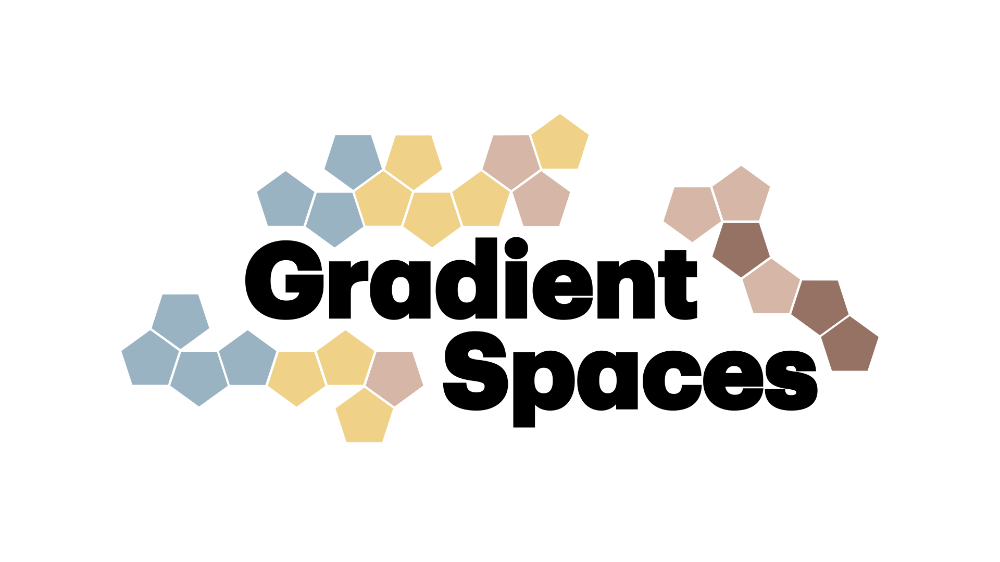

Leading the Gradient Spaces group. I work at the intersection of civil engineering, architecture, and machine perception to design and construct data-driven environments across physical and digital space.
My area of focus is on developing quantitative and data-driven methods that learn from real-world visual data to generate, predict, and simulate new or renewed built environments that place the human in the center. My goal is to create sustainable, inclusive, and adaptive built environments that can support our current and future physical and digital needs.
As part of my research vision, I am particularly interested in creating spaces that blend from the 100% physical (real reality) to the 100% digital (virtual reality) and anything in between, with the use of Mixed Reality.
Read more in A Day in the Life of an Architect in the Gradient World.
Tao Sun*, Liyuan Zhu*, Shengyu Huang, Shuran Song, Iro Armeni
arXiv preprint
Martin JJ. Bucher, Iro Armeni
arXiv preprint
Liyuan Zhu, Shengqu Cai*, Shengyu Huang*, Gordon Wetzstein, Naji Khosravan, Iro Armeni
ACM SIGGRAPH 2025
Jianhao Zheng*, Zihan Zhu*, Valentin Bieri, Marc Pollefeys, Songyou Peng, Iro Armeni
CVPR 2025
Sayan Deb Sarkar, Ondrej Miksik, Marc Pollefeys, Dániel Barath, Iro Armeni
CVPR 2025 [Highlight]
Liyuan Zhu, Yue Li, Erik Sandström, Shengyu Huang, Konrad Schindler, Iro Armeni
3DV 2025 [Oral Presentation]
Jianhao Zheng, Gabor Valasek, Daniel Barath, Iro Armeni
WACV 2025 [Oral Presentation]
Jianhao Zheng, Daniel Barath, Marc Pollefeys, Iro Armeni
ECCV 2024
Jiaqi Chen, Daniel Barath, Iro Armeni, Marc Pollefeys, Hermann Blum
ECCV 2024
Ata Çelen, Guo Han, Konrad Schindler, Luc Van Gool, Iro Armeni*, Anton Obukhov*, Xi Wang*
CV4Metaverse, Workshop in ECCV 2024
Tao Sun, Yan Hao, Shengyu Huang, Silvio Savarese, Konrad Schindler, Marc Pollefeys, Iro Armeni
ISPRS Journal of Photogrammetry and Remote Sensing 2025
Liyuan Zhu, Shengyu Huang, Konrad Schindler, Iro Armeni
CVPR 2024 [Highlight]
Shengze Jin, Iro Armeni, Marc Pollefeys, Daniel Barath
CVPR 2024
Oguzhan Ilter, Iro Armeni, Marc Pollefeys, Daniel Barath
ICRA 2024
Yang Miao, Iro Armeni, Marc Pollefeys, Daniel Barath
IROS 2024 Oral Presentation
Shengze Jin, Daniel Barath, Marc Pollefeys, Iro Armeni
3DV 2024
Sayan Deb Sarkar, Ondrej Miksik, Marc Pollefeys, Daniel Barath, Iro Armeni
ICCV 2023
Elena Iannuci, Zhu-Tian Chen, Iro Armeni, Marc Pollefeys, Hanspeter Pfister, Johanna Beyer
EuroVis 2023 [Best Short Paper Honorable Mention Award]
Cathrin Elich, Iro Armeni, Martin R. Oswald, Marc Pollefeys, Joerg Stueckler
ICRA 2023
Dhruv Agrawal*, Janik Lobsiger*, Jessica Bo, Véronique Kaufmann, Iro Armeni
EC3 2022
Yiming Zhao*, Cyprien Fol*, Yuchang Jiang, Tianyu Wu, Iro Armeni
EC3 2022
Corinne Stucker, Bingxin Ke, Yuanwen Yue, Shengyu Huang, Iro Armeni, Konrad Schindler
ISPRS Congress 2022 [Best Young Author Award]
Bryan Chen*, Alexander Sax*, Gene Lewis, Iro Armeni, Silvio Savarese, Amir Zamir, Jitendra Malik, Lerrel Pinto
CoRL 2020
Iro Armeni, Jerry Zhi-Yang He, JunYoung Gwak, Amir R. Zamir, Martin Fischer, Jitendra Malik, Silvio Savarese
ICCV 2019
Lyne P. Tchapmi, Christopher B. Choy, Iro Armeni, JunYoung Gwak, Silvio Savarese
3DV 2017 [Spotlight Presentation]
Iro Armeni*, Alexander Sax*, Amir R. Zamir, Silvio Savarese
Technical Report 2017
Iro Armeni, Ozan Sener, Amir R. Zamir, Helen Jiang, Ioannis Brilakis, Martin Fisher, Silvio Savarese
CVPR 2016 [Oral Presentation]
Viorica Pătrăucean, Iro Armeni, Mohammad Nahangi, Jamie Yeung, Ioannis Brilakis, Carl Haas
Advanced Engineering Informatics 2015
Luigi Spedicato, Iro Armeni, Nicola Ivan Giannoccaro, Markos Avlonitis, Sozon Papavlasopoulos
Periodical of Key Engineering Materials 2015
Iro Armeni, Konstantinos Chorianopoulos
Workshop, International Conference on Intelligent Environments 2013
Iro Armeni*, Telesilla Bristogianni*
Technical Chronicles, Technical Chamber of Greece 2020
📍 473 Via Ortega, Stanford, Room 233